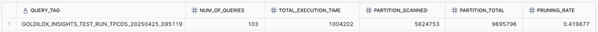
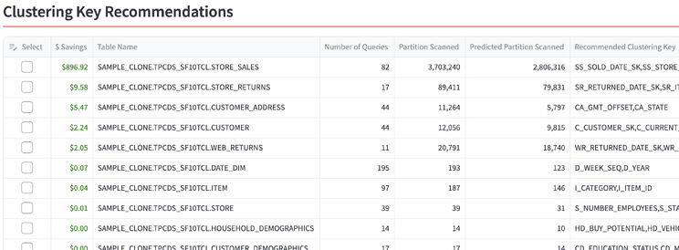
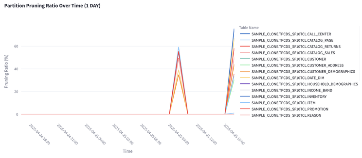
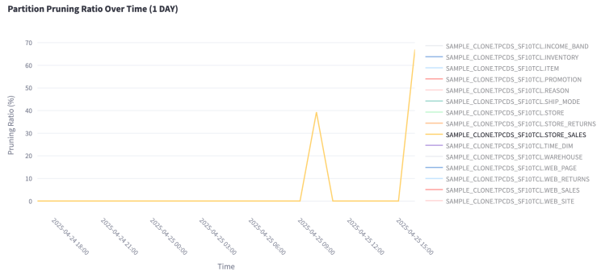
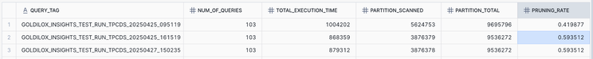

Optimizing Snowflake Table Clustering Keys Automatically: First Results from Insights
Automated Snowflake tuning to improve pruning and reduce cost — improving table partition pruning to 59% and speeding up queries by 12% on a TPC-DS benchmark dataset.
At Goldilox Technology, we believe Snowflake optimization should be smarter, simpler, scalable, and automatic. Today, we're excited to introduce Insights — our first product for automated Snowflake performance optimization — and share the first real-world results it achieved.
Why table clustering keys matter
Table scanning is the most expensive part of query execution — often over 60% of the total cost and time. When queries have to scan large numbers of micro-partitions unnecessarily, performance suffers and compute costs spike.
This is where Snowflake's table clustering keys come in. Cluster keys control how data is physically organized inside Snowflake tables, dramatically impacting how many micro-partitions a query needs to scan. Good table clustering leads to more efficient partition pruning — and faster, cheaper queries.
The problem: manual clustering key tuning doesn't scale
While clustering keys can significantly improve Snowflake performance, manually managing them presents serious challenges:
- Evolving query patterns. Query patterns constantly evolve — new reports, dashboards, and ad-hoc queries appear every day. What was optimal yesterday may not be optimal tomorrow.
- Visibility gaps. Without detailed query analysis, it's almost impossible to know which columns users are actually filtering or joining on most frequently.
- Time and expertise. Identifying target tables, analyzing query history, testing clustering keys — all require significant time and expertise, often from senior data engineers.
- High cost of missed opportunities. Poor or outdated clustering leads directly to higher compute costs and slower user experiences.
- Lack of scalability as workloads evolve. As new applications are built, new reports are added, and business needs shift, query patterns change constantly. Manual tuning becomes a game of endless catch-up — making it impossible to optimize proactively at scale.
Yet today, tuning clustering keys remains a manual, time-consuming process — one that simply can't keep pace as query workloads evolve and expand.
Introducing Insights: automated, adaptive clustering key recommendations
At Goldilox Technology, we built Insights to solve exactly these challenges. Instead of relying on manual analysis and static tuning, Insights continuously monitors real-world query patterns, analyzes table access behavior, and surfaces data-driven clustering key recommendations.
Insights's engine is designed to:
- Analyze live query profiles and metadata to understand how tables are actually used.
- Identify tables where clustering can have the greatest impact on performance.
- Recommend optimal clustering keys based on query patterns.
- Adapt over time as workloads shift, new recommendations are created, and application usage evolves.
By automating what was previously a labor-intensive and reactive process, Insights enables Snowflake environments to stay optimized — improving query performance and lowering compute costs without human intervention. In the next section, we'll walk through our first real-world demonstration of Insights in action, applied to a Snowflake TPC-DS dataset.
Use case: optimizing TPC-DS datasets
The TPC-DS (Transaction Processing Performance Council – Decision Support) benchmark is an industry-standard dataset and workload used to evaluate the performance of analytical database systems. It's used by leading data warehouse platforms — such as Snowflake, Databricks, and Redshift — to demonstrate and validate system performance at scale. It reflects a wide range of real-world decision-support scenarios including complex joins, filters, aggregations, and large table scans.
Snowflake includes a TPC-DS-based sample schema (SNOWFLAKE_SAMPLE_DATA.TPCDS_SF10TCL) which provides a well-structured, yet non-trivially large dataset (scale factor 10). Our use case is based on this official dataset and queries.
Step 1. Copy the data
Since we'll be modifying the tables after the baseline run, we copied the data into our own database:
CREATE OR REPLACE TABLE sample_clone.tpcds_sf10tcl.CATALOG_PAGE AS SELECT * FROM snowflake_sample_data.tpcds_sf10tcl.CATALOG_PAGE;
CREATE OR REPLACE TABLE sample_clone.tpcds_sf10tcl.PROMOTION AS SELECT * FROM snowflake_sample_data.tpcds_sf10tcl.PROMOTION;
CREATE OR REPLACE TABLE sample_clone.tpcds_sf10tcl.WEB_PAGE AS SELECT * FROM snowflake_sample_data.tpcds_sf10tcl.WEB_PAGE;
-- ... repeated for the remaining tables ...This would ideally maintain the original table structure. (Later in validation we noticed certain table ordering may have changed during the copy process — but this does not impact the result.)
Step 2. Execute queries (baseline)
The queries are provided by Snowflake, based on the TPC-DS benchmarks. We disabled cached results and tagged each run with a dynamic timestamp so we could compare baseline against post-tuning runs:
USE SCHEMA sample_clone.tpcds_sf10tcl;
ALTER SESSION SET use_cached_result = FALSE;
SET start_time = CURRENT_TIMESTAMP();
ALTER WAREHOUSE goldilox_app_client_wh SET warehouse_size = '2x-large';
-- Set a variable with the dynamic query tag value
SET query_tag_val = (SELECT 'GOLDILOX_INSIGHTS_TEST_RUN_TPCDS_' || TO_VARCHAR(CURRENT_TIMESTAMP, 'YYYYMMDD_HH24MISS'));
ALTER SESSION SET query_tag = $query_tag_val;
-- ... then run the 99 TPC-DS benchmark queries ...Thoughts on baseline performance: after executing all 99 queries as the baseline, we saw 5.6M partitions scanned out of 9.6M partitions total — roughly a 41% pruning rate, which is excellent compared to most real-world scenarios. We suspect this is the outcome of careful tuning by the Snowflake team to boost TPC-DS benchmark performance.

query_history — 41.99% pruning rate before tuningStep 3. Trigger the Insights update task and apply recommendations
The Insights update task is scheduled to run periodically. For this use case, we manually triggered it, which analyzes the workload and applies the pre-trained recommendation model. In the Insights app (delivered through Snowflake Native Apps), the model recommended a set of clustering keys:

Based on the report, we picked 8 high-impact tables and applied the recommended keys:
ALTER TABLE SAMPLE_CLONE.TPCDS_SF10TCL.STORE_SALES CLUSTER BY (SS_SOLD_DATE_SK, SS_STORE_SK);
ALTER TABLE SAMPLE_CLONE.TPCDS_SF10TCL.STORE_RETURNS CLUSTER BY (SR_RETURNED_DATE_SK, SR_ITEM_SK);
ALTER TABLE SAMPLE_CLONE.TPCDS_SF10TCL.CUSTOMER_ADDRESS CLUSTER BY (CA_GMT_OFFSET, CA_STATE);
-- ... 8 high-impact tables in total ...Then we waited for auto-clustering to complete on the Snowflake side.
Step 4. Re-run the benchmark and view results
We ran the benchmark query script again, this time tagged with a different timestamp (and repeated the test again a couple of days later). The following view shows the partition pruning ratio over time across all tables. We only updated 8 tables, but the improvement is clearly visible — pruning ratios jump on the re-run:

Zooming in on STORE_SALES — the largest table, which scans millions of partitions across these queries — the pruning ratio improved from 40% to 69%. The largest, most-scanned tables seeing the biggest gains is exactly what you want, because those tables cost the most to scan.

Pulling it together from query_history — row 1 is the baseline; rows 2 and 3 are the runs after the recommended keys were applied:

query_history| Metric | Before | After |
|---|---|---|
| Overall pruning rate | 41% | 59% |
| Total query execution time | 1,004 s | 870 s (−12%) |
| STORE_SALES pruning | 40% | 69% |
The overall pruning rate improved from 41% to 59%, which directly translated into better execution time — a 12% improvement. Because Snowflake compute is billed by warehouse runtime, those 12% faster queries mean roughly 12% savings on Snowflake cost across this workload.
Disclaimer on benchmark comparison
We feel it's important to clarify a couple of points. The Snowflake TPC-DS sample data we used was copied using standard SELECT * FROM operations and may not be as finely tuned as the datasets used in Snowflake's published performance benchmarks. Our goal here was to simulate a realistic customer scenario using industry-standard sample data — not to match official benchmark scores.
Conclusion: smarter optimization, scaled automatically
This use case demonstrates what we built Insights to do: turn Snowflake query optimization from a manual, one-time task into a continuous, intelligent system. Despite starting with a dataset that was already well-optimized, Insights delivered:
- 18% increase in pruning efficiency
- 12% reduction in total execution time (from 1,004 seconds to 870 seconds)
- Zero manual analysis or tuning effort
In many real-world Snowflake environments, initial pruning rates are often much lower than 41% — especially in large, evolving datasets without consistent tuning. This means the performance and cost improvements from Insights would likely be even more dramatic.
Most importantly, these gains were achieved through automation. No trial-and-error. No manual SQL rewrites. No dashboards to babysit. Insights makes it possible for Snowflake performance to continuously adapt to evolving workloads, stay optimized without heavy manual intervention, and unlock better performance at lower cost. Stay tuned — this is just the beginning.
Want to see what Insights recommends for your tables? Install from the Snowflake Marketplace and preview the dashboard for free. If you run a Snowflake environment — or you're a Snowflake-focused service provider or consultancy — we'd love to connect.
Try Free on Snowflake Marketplace